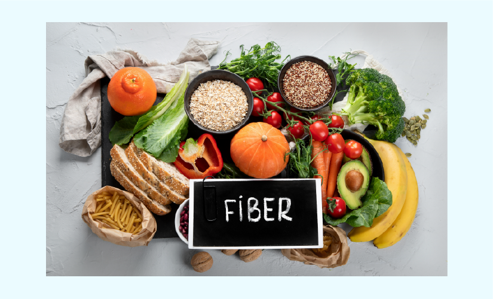

Healthy Meal Planning
For older adults, eating a balanced diet with nutrient-dense foods is essential. Focus on fruits, vegetables, whole grains, lean proteins, and fiber-rich foods to support digestion and heart health. Hydration is key, so drink water and eat water-rich foods. Smaller, frequent meals help maintain energy, while limiting processed foods, unhealthy fats, and sugars is important. Healthy fats from sources like avocados and fatty fish promote overall well-being.